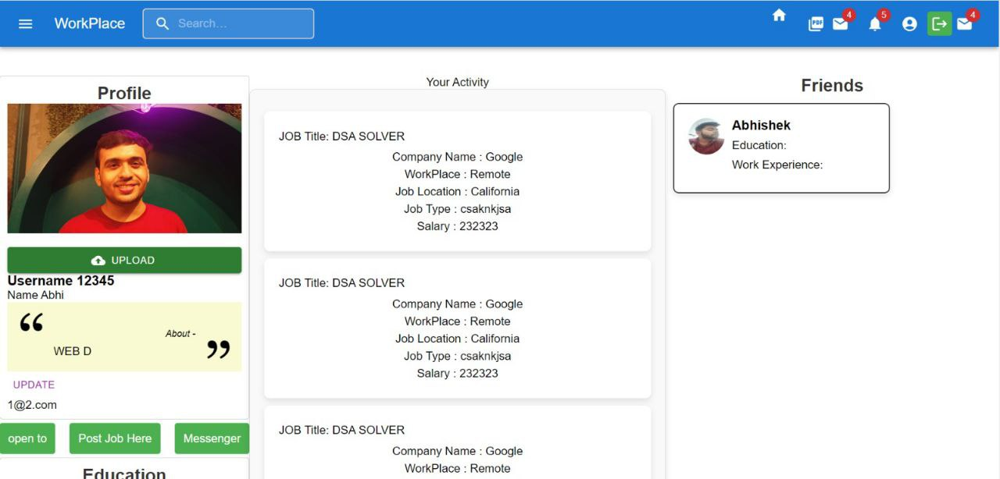
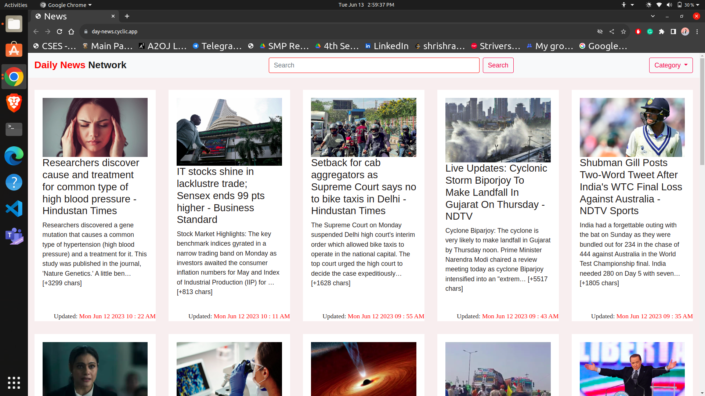

Experience
Software Engineer, Backend
- Migrated the LLM backend from LiteLLM to LangChain with explicit provider-level
integrations and output validation pipelines.
- Evaluated external memory providers (Supermemory, Mem0) against golden datasets to drive
the persistent memory architecture for LLM pipelines.
- Implemented KEDA-based auto-scaling from BigQuery analysis of production traffic
patterns.
SDE Backend Intern
- Integrated SonarQube across microservices — test coverage to 65%, bugs down 70%, code
smells down 90%.
- Migrated Metabase dashboards to the EOD Portal with Redis caching, cutting dashboard
latency by 25%.
Skills
- AI / LLM
- LangChain, LiteLLM, Supermemory, RAG, Prompt Engineering
- Backend & Infra
- Spring Boot, Node.js, Kafka, Redis, Microservices, Docker, Kubernetes
- Languages & DB
- Java, JavaScript, Python, C++, C, PostgreSQL, MongoDB
Coding Profile
- Rating: 1431 (max)
- Rank: Specialist
- Handle: shrishraj
- Rating: 1985 (max), Top 3%
- Rank: Knight
- Solved: 1000+ problems
- Handle: shrishrajgupta
Projects

React.js · Node.js · Express.js · MongoDB · Socket.io
Job portal connecting employers and blue-collar job seekers.
- Real-time chat with sub-100 ms latency over Socket.io
- Built-in resume builder with 8 templates
- Job posting, application, and management flows for both sides
Spring Boot · MySQL · Kafka · Docker · Jacoco
Backend service for recording trades and tracking portfolios, built during the Groww
internship.
- 8 REST endpoints covering trades, portfolios, users, stocks, and price simulation
- Analytics for total holdings, realized P&L, and per-investment performance
- API-driven scripts and CSV import for data ingestion

JavaScript · News API
News reader for timely stories from around the globe.
- Top stories of the day, plus Business, Tech, Sports, Science, and Health categories
- Keyword search and bookmarks to read later
Education
Motilal Nehru National Institute of Technology Allahabad — B.Tech, Electronics &
Communication Engineering · 2021–2025 · CPI 8.45